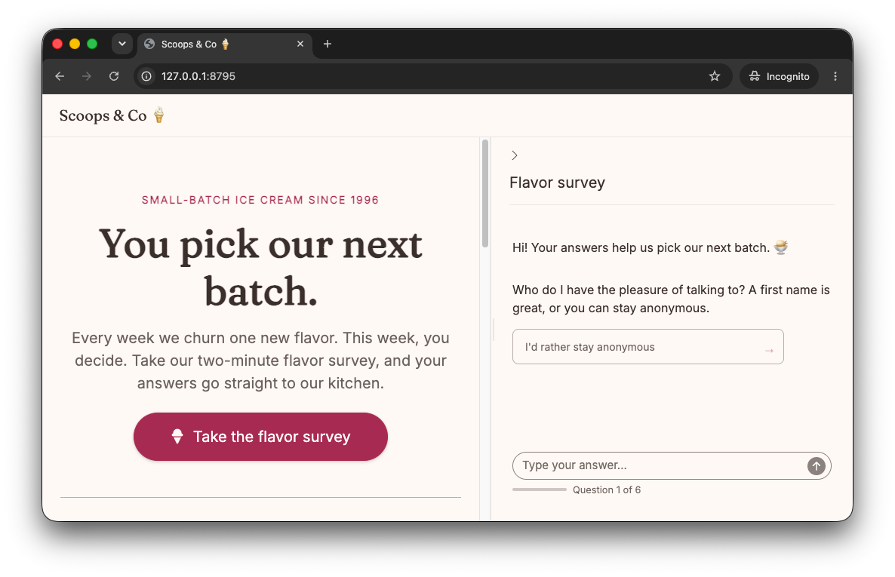
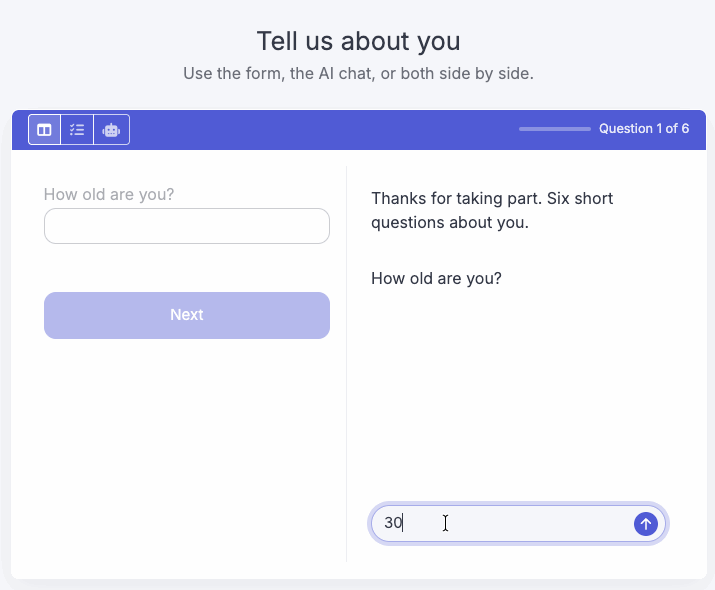

surveychat collects data in a conversation with shinychat. The user answers structured questions in a natural dialogue. At the same time, the LLM extracts the data, generates content, and asks adaptive questions.
Installation
pak::pak("dylanpieper/surveychat")Examples
The package includes two example apps:
-
"icecream": a chat survey in the side panel of an ice cream shop web page -
"demographics": a form and the AI chat side by side
Run each one with run_example(). You choose the model with chat, as "provider/model". The provider reads its own key variable, such as ANTHROPIC_API_KEY. To set the model once, put SURVEYCHAT_MODEL in ~/.Renviron. The model must support structured output.
Ice cream shop
The survey asks about the favorites of the user, and a drawer beside the chat shows the answers so far.
surveychat::run_example("icecream", chat = "anthropic/claude-haiku-4-5")
The source is in inst/examples/icecream/app.R.
Demographics
The user can answer each question in the form or in the chat, and the other view dims.
surveychat::run_example("demographics", chat = "anthropic/claude-haiku-4-5")

The source is in inst/examples/demographics/app.R.
Key Features
- LLM extraction with structured schemas that validate and retry invalid answers, and that record answers to later questions so the survey does not ask again
- Adaptive questions and generated content based on the previous answers of the user
- Choice cards from a fixed list, an enum, or the LLM; the user can also type an answer
- Form, chat, or both side by side: the user can change the view at any question; a fixed choice in the form needs no LLM call, and typed text gets the same check as the chat
- SQL storage of raw and extracted answers, retry counts, and timings
- Chat UI in any layout, full page or sidebar, with an optional progress cue and drawer for the answers
Usage
Build a survey with the pipe. Each verb adds to a plain list:
library(surveychat)
library(ellmer)
survey <- survey_spec() |>
add_question(
"name",
text = "What's your name?",
answer = type_string("The person's first name")
) |>
add_question(
"flavor",
text = "Hi {name}! What's your favorite ice cream flavor?",
answer = type_string("The flavor"),
valid = "they mentioned any flavor"
) |>
add_question(
"why",
text = prompt_llm("{name} likes {flavor}. Ask why, in one short question."),
answer = type_string("The reason"),
intro = prompt_llm(
"Share a short fun fact about {flavor} ice cream.",
format = "Oh, {flavor}! {content}"
)
)Then run it in Shiny with any ellmer chat and any DBI connection:
library(shiny)
chat <- chat_claude(echo = "none")
con <- DBI::dbConnect(RSQLite::SQLite(), "survey.db")
onStop(\() DBI::dbDisconnect(con))
ui <- survey_ui("survey", title = "Ice cream")
server <- function(input, output, session) {
survey_server("survey", survey, chat, con)
}
shinyApp(ui, server)To put the survey in a larger app, use survey_chat_ui() in place of survey_ui(), for example in a bslib::sidebar(fillable = TRUE). The survey starts when the chat first shows on the screen.
Each question has up to five parts:
| Argument | Purpose |
|---|---|
text |
The question. {id} fills in an earlier answer. With prompt_llm(), the LLM writes an adaptive question. |
answer |
The ellmer type to extract. |
valid |
A plain condition, such as "they mentioned any flavor". An invalid answer is asked again, up to tries times. |
intro |
A prompt_llm() whose output comes before the question, such as a fun fact. format places the output as {content}. The intro adds to the question and does not replace it. |
choices |
Clickable cards: strings, a prompt_llm() for LLM ideas, or a list of both. An enum answer shows its values. |
Use set_messages() to change the welcome, retry, and closing messages, and set_config() to change the retries and the typing speed.
Design a survey explains validation, placeholders, generated content, choices, and the supported databases.
Data Model
sessions: one row for each user.
| Column | Meaning |
|---|---|
session_id |
Generated key |
started_at, completed_at
|
Times of the start and the completion |
completed |
TRUE after the last answer |
retry_count |
Total retries in the session |
version |
The version of the question set, from survey_spec() or set_config()
|
duration_seconds |
Time since the start, updated after each answer |
responses: one row for each answer, including each retry.
| Group | Columns |
|---|---|
| Keys |
response_id, session_id, question_id, question_order
|
| Exchange |
question_text, answer_raw, answer_extracted
|
| Quality |
valid, retry_attempt, method (chat or form) |
| Timing |
responded_at, duration_seconds
|
An answer that came early, in the reply to an earlier question, has no question_text. A skipped optional answer has no answer_extracted. A form answer has no valid flag when the LLM check failed.
Analyze the Data
The tables are plain SQL, so any DBI client can read them:
con <- DBI::dbConnect(RSQLite::SQLite(), "survey.db")
sessions <- DBI::dbReadTable(con, "sessions")
responses <- DBI::dbReadTable(con, "responses")
DBI::dbDisconnect(con)